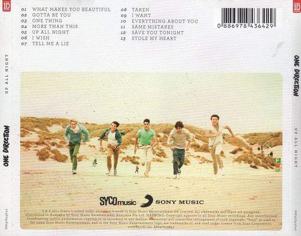
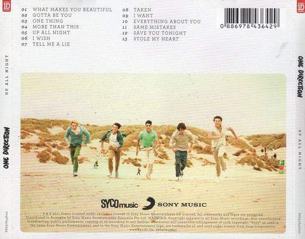

One Direction is a band including Niall Horan, Liam Payne, Harry Styles, Louis Tomlinson, and previously, Zayn Malik until his departure from the band in March 2015. As they all auditioned as individuals in the competition, The X Factor
. Simon Cowell signed and created the band, finishing in 3rd place. They released their first single, What Makes You Beautiful
, in 2011 and soon, the full-length album Up All Night
followed. In 2012, One Direction became the first British band to make the top of the Billboard 200 list when Up All Night
sold over 176,000 copies during its first week of release in America. Soon in late 2012, they came out with their next album, Take Me Home
and the singles Live While We're Young
and Little Things
hit number one across the globe. While they were touring, One Direction also began work on their third album, Midnight Memories
.In 2013, the band release a movie called, This is Us
. Similar films, Justin Bieber: Never Say Never
and Katy Perry: Part of Me
, the film is about the band's rise to stardom. The group toured the world for most of 2014, but still had time to record a fourth album, which was released in 2014. Produced by the same team who dealed with their previous album, Midnight Memories
, Four
featured a new song from old friend Ed Sheeran. Two platinum singles, "Steal My Girl" and "Night Changes," made the album hit #1 in almost 20 countries.In the middle of the tour, Zayn shocked millions of fans when he announced that he quit the band. A few months after Zayn's departure, the band released Drag Me Down
as the first single off their fifth album, which was later would be called Made in the A.M.
and came out in November.
You can find out more at One Direction's Official Website
Harry Styles was born in Bromsgrove, England, on February 1, 1994. He is the youngest member of the band and worked at a bakery when he was fourteen years old. He was raised with an older sister named Gemma and he had a relationship with country singer Taylor Swift that ended in January 2013.
The X Factor(2004), he and One Direction band mate Louis Tomlinson moved in together
Louis Tomlinson was born on December 24, 1991, in Doncaster, England. His parents, Johannah and Troy Austin, divorced when he was young, and he took his stepfather Mark Tomlinson's last name as his own. He has five younger stepsisters: Georgia, Charlotte, Felicite and twins Daisy and Phoebe. When his baby twin sisters had minor roles on the television comedy Fat Friends
, Louis went along and was also cast as an extra. In Doncaster, Tomlinson attended The Hayfield School, and failed to graduate, he completed his studies at Hall Cross Academy. At Hall Cross he performed in several school productions, including the musical Grease
. Outside school, he worked part-time jobs in retail and at the Doncaster Rovers Football Club.
Niall Horan was born on September 13, 1993, in Mullingar, County Westmeath, Ireland. His parents, Bobby and Maura Horan, divorced when he was a child. Niall and his older brother, Greg, moved back and forth between their parents' two households before settling in with their father. He attended St. Kenny National School, where he performed in school plays and sang in the school choir. As a teenager he performed at the Mullingar Arts Centre (in a fund-raiser for the local football team, the Shamrocks) and at The Academy in Dublin.
Liam Payne was born on August 29, 1993, in Wolverhampton, England. His early interest in music and performing led him to compete on talent competition The X Factor
in 2008 and 2010. On his second try he attracted positive notice. His dad, Geoff, works for the aerospace manufacturing corporation Goodrich and his mom, Karen, has worked as a nurse and a receptionist. Liam has two older sisters, Nicole and Ruth. He attended St. Peter's Collegiate School and as a pre-teen, he was interested in both music and athletics. He was a member of the Wolverhampton & Bilston Athletics Club and trained as a runner. He also acted and sang with a local theater performance group called Pink Productions when he was 12. Following his graduation from St. Peter's, he enrolled in the City of Wolverhampton College to study music technology.
Zayn Malik was born on January 12, 1993, in Bradford, England, he had an early love for singing and performing, and at the age of 17 he competed in the television competition The X Factor
. Zayn left the group in March 2015 and the following year, he released his first solo album. He released that the album was called Mind of Mine
and the album's lead single Pillowtalk
was released along with its accompanying music video on 29 January 2016. Mind of Mine
was at number one in a lot of countries, including the United Kingdom, Australia, Canada, New Zealand, Norway, Sweden, and United States, where he became the first British male solo artist to get at number one with his first album.
Up All Night
is the first album from One Direction. It was released on November 2011 in Ireland and the United Kingdom, through Syco Records. It was later released in North America, through Columbia Records. It was the third best selling album of 2012 globally, selling 4.5 million copies and reaching #1 in 16 countries. The album was at number on the US Billboard 200, selling 176,000 copies in its first week. One Direction became the first U.K. group ever to debut at number one in the United States with their first album, a Guinness World Record the band still holds as of 2016. As of August 2015, the album has sold over 2.5 million copies in the United States.
 

One Direction announced in early 2012 that they had began working on their second album including 2 songs written by Ed Sheeran.Take Me Home
went to #1 in more than 35 countries and sold over 4 million copies, making it the fourth bestselling album of 2012.
Midnight Memories
is One Direction's third album. It was released on November 25, 2013 and was available for pre-order from September 9, 2013. It became number one in over 90 countries including the United Kingdom and USA.
Four
is the fourth album released by One Direction. It was released on November 17, 2014. Four
reached #1 in 67 countries and was the band's first critically famous album. After it debuted at #1 in the United States, One Direction became the first band ever to have all four albums debut at number one. It was the ninth bestselling album in the United States in 2014 and sold over 3.2 million copies worldwide since 2014. On August 13 2015, Billboard announced the album had sold over a million copies in the US. On September 18 2015, BPI
Music announced Four
had gone double platinum.
On September 22, the title for the fifth studio album, Made in the A.M.
, was officially announced along with promotional single Infinity
being released. The group began to reveal the track listing on their Snapchat stories to which it was later on iTunes. The band members all agreed that this album was the best work out of their other efforts due to their main involvement with writing and composition for the majority of the songs. Drag Me Down
was released as the album's lead single on July 31, 2015, with no previous promotion or warning. It hit #1 on the UK Singles Chart, breaking the record for the most streamed song in its first week, with 2.03 million plays. In the United States, the song debuted at number three on the Billboard Hot 100 chart
, with 350,000 downloads in its first week, earning the band their largest sales week ever.Drag Me Down
also broke and set a new record for having the fastest and most likes earned in1 day. Perfect
was serviced as the album's second single on October 16, 2015. The song debuted at #2 in the UK and #10 on the Billboard Hot 100 chart
.
Return to the top of the page